Especialidad
Portfolio de tatuajes de línea fina en Madrid. Un estilo, muchas formas de contarlo.
Trabajo real, hecho en el estudio. Retratos animales con flores, piezas delicadas y composiciones a medida — siempre con la línea fina como hilo conductor.
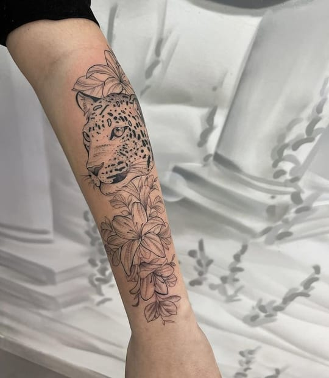
Leopardo & lirios
Retrato animal + botánico, antebrazo
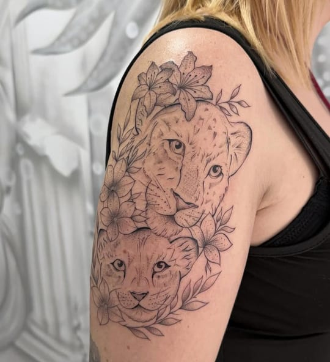
Crías & flores
Composición doble, hombro
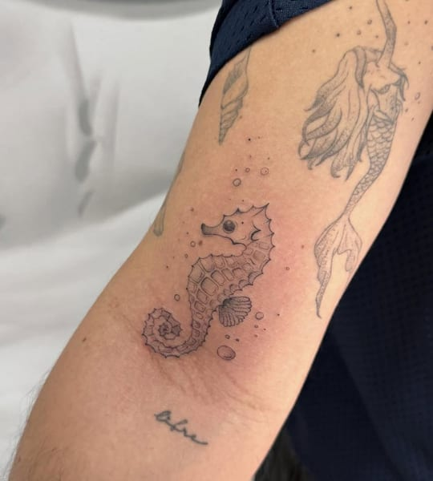
Caballito de mar
Pieza delicada, brazo
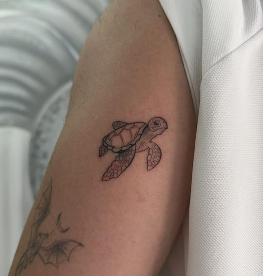
Tortuga marina
Línea fina, brazo
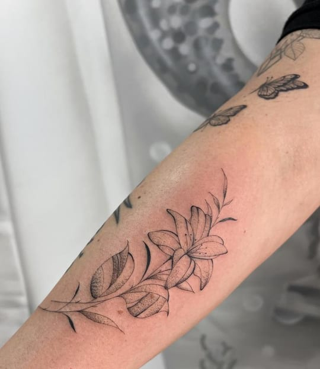
Lirio
Botánico, antebrazo
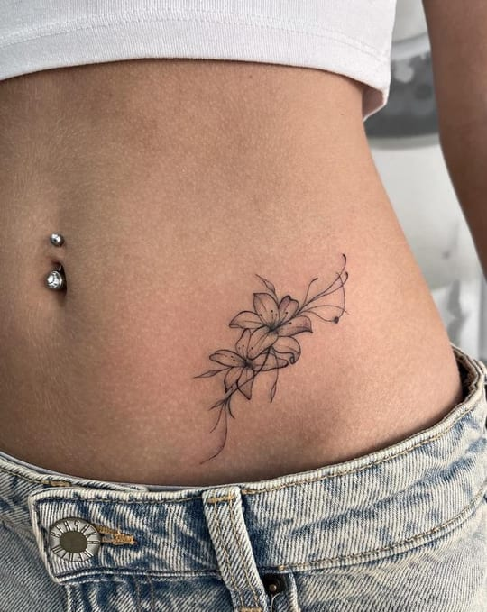
Lirios
Composición, costado
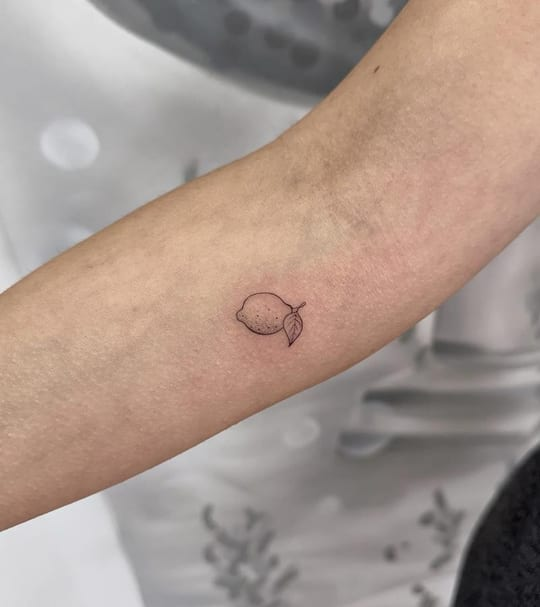
Limón
Micro tatuaje
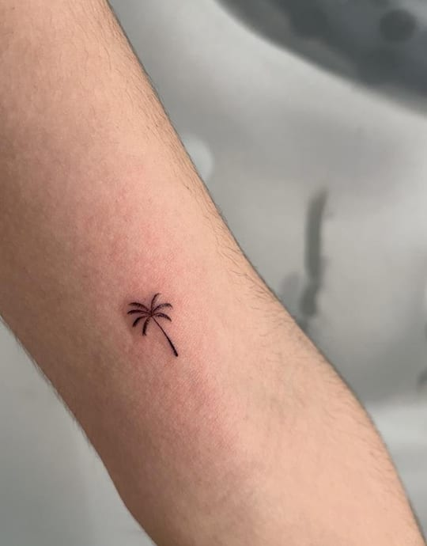
Palmera
Micro tatuaje
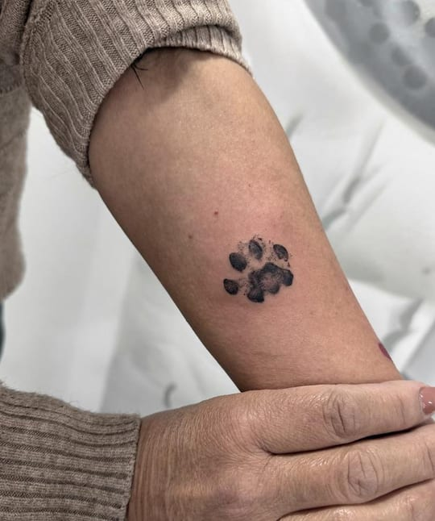
Huella
Antebrazo
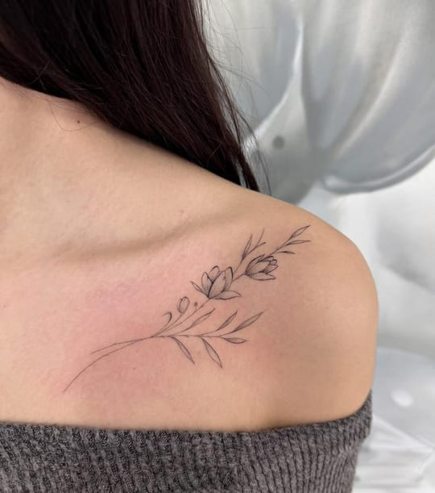
Rama floral
Botánico, hombro
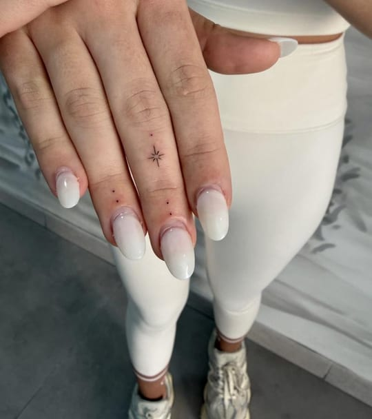
Estrella & puntos
Micro tatuaje, mano
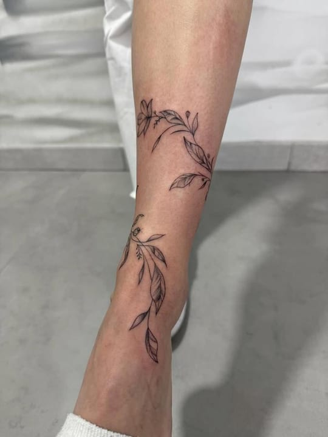
Enredadera
Botánico, tobillo
Botánico
Animalier
Micro tatuaje
Geométrico fino
Minimalista
A mano alzada
Personalizado